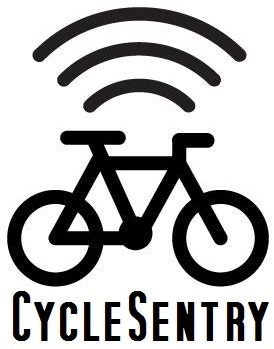
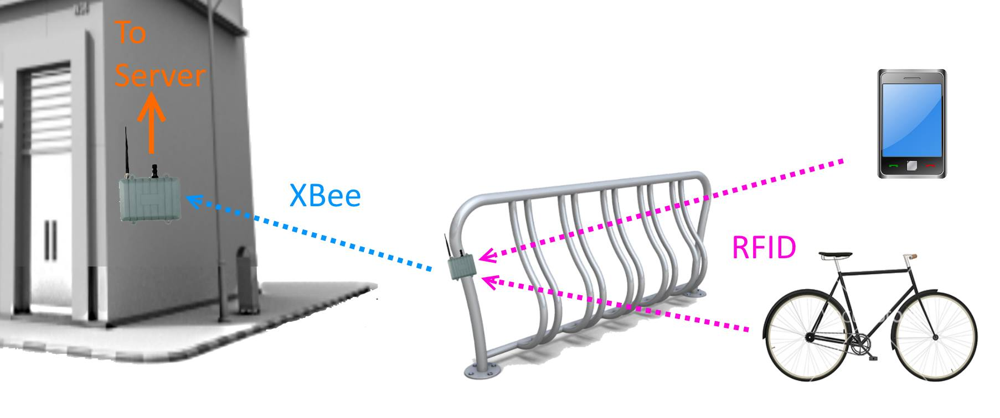
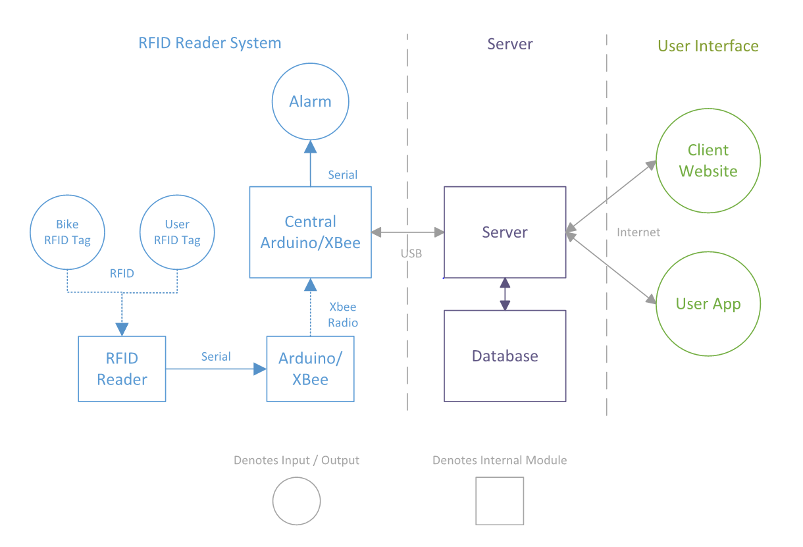

RFID Bike Monitoring
Group #5: Max Bittker, Ben Brown, Connor MacLean, Morgan Williams
Motivation for the Project
- High bike theft rate in Kingston deters cycling [1]
- Queen’s bike rack placement could be improved with data on usage
- Well-integrated Radio-Frequency Identification (RFID) systems can improve daily life
Objectives of the System
- Discourage bike theft on Queen’s University
- Collect useful data on bike rack usage
- Explore the feasibility of RFID bike monitoring
Challenges
- Supervisor change resulted in new budget, so only one RFID reader could be purchased
- Purchased RFID reader:
- Range is impractically small (~5 cm)
- Only detects one tag at a time
Project Overview
Three main sub-systems:
- Hardware: Xbees and Arduinos
- Server: database and control logic
- Android App


CONCLUSIONS & RECOMMENDATIONS
Feasibility
- Technologically feasible to implement
- Would require more expensive RFID readers
- Costs could be mitigated by:
- Technology maturation
- Bulk purchasing
- Custom/non-hobbyist caliber parts
Future Work
- Explore systems based on other technologies
- Possibilities: Bluetooth, Wi-Fi
- Downside: likely need batteries on bikes
Legal and Ethical Concerns
- Privacy: tracking bike rack arrival/departure times
- Liability: reckless riding injuries, vigilantism [2] [3]
- Illegal Uses: thieves using bike rack usage data
Possible Integrations
- Video camera that saves footage of bike rack vicinity for the time period of detected thefts
- Theft data/notifications sent to Campus Security
- Kingston Police using RFID scanners to read the tags of recovered stolen bikes